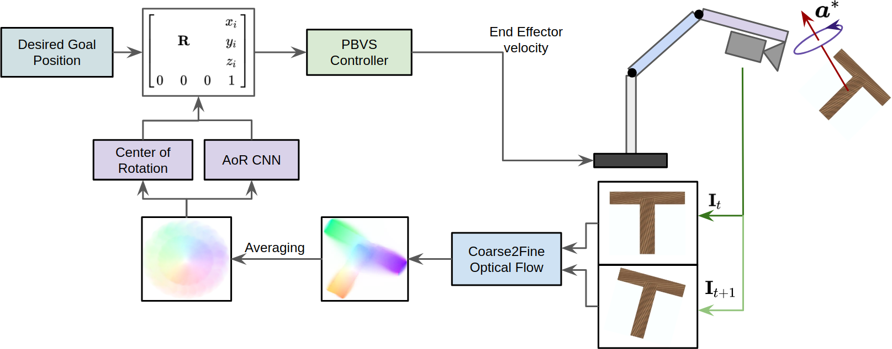
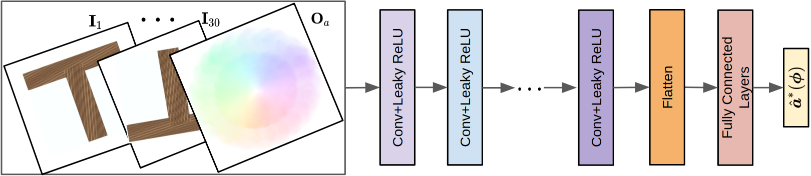

Learning-based Approach for Estimation of Axis of Rotation for Markerless Visual Servoing to Tumbling Objects(April 2020- Jan 2021)
Mentor: Dr. Suril V. Shah and Dr. Rajendra Nagar | B.Tech ProjectPaper: Advances in Robotics (AIR2021)
Technologies: Tensorflow, Keras, VRep/CoppeliaSim, Blender, Nvidia DGX-2
Keywords: Convolutional Neural Network, Optical Flow, Visual Servoing, Image-based Control, Robotic Arm, Custom dataset

The ever-increasing satellite launches have resulted in thousands of satellites and debris orbiting the planet. These satellites require repair at times, or else they would add to the existing debris problem. On-Orbit servicing of the orbiting satellites has become essential to maintain and repair the satellites in orbit. Space debris poses a potential risk to all the satellites in orbit and all future space missions. Capturing them and then proper disposal has thus become necessary for maintaining free operational space for other satellites. Space debris are of varying shapes and sizes. They are produced in various ways, like an impact of a satellite with space crafts, rocket upper stages and malfunctioning satellites.
The first step to perform on-orbit servicing or capturing space debris is to dock to or capture it before performing any other step. These objects are often non-cooperative and tumbling, which becomes a challenge. Most of the available solutions for these problems require a 3D model of the object or estimation of a 3D model using point cloud data using various sensors like LiDAR. The unknown dynamics and structure of the space debris make these methods infeasible. Even the solutions that do not require a 3D model require markers that are not always available, especially in debris.
We propose a novel featureless visual servoing approach for reaching the desired pose near a tumbling object. Unlike the previous, our method does not require estimating the 3D model of the tumbling object or markers on the tumbling object. The axis of rotation of a tumbling object rotating around this axis becomes a feature for performing visual servoing. The image taken from a camera is processed, and a neural network calculates the axis of rotation, which is integral for the task of visual servoing in this novel approach. The main contributions of the proposed work are :
- • A marker-less approach to predict the axis of rotation and the angular velocity of a tumbling object using a convolutional neural network.
- • A visual servoing strategy that can attain the desired pose with respect to a rotating target without explicit reconstruction of the target's motion.

The following was accomplised as a part of the project:
- • A custom dataset of 600k videos (~300GB) of tumbling T-shaped objects was created using Blender. As a part of the preprocessing, Optical Flow was computed in a coarse to fine manner.
- • A Convolution Neural Network (CNN) was trained on the custom dataset to extracted static features of the tumbling object from the calculated optical flow. The extracted features were used in the control law to control the manipulator.(Nvidia DGX-2 was used to generate the dataset and train the model)
- • Position-Based Visual Servoing was simulated in a VRep environment with a tumbling object using the extracted features of the tumbling object on VRep.